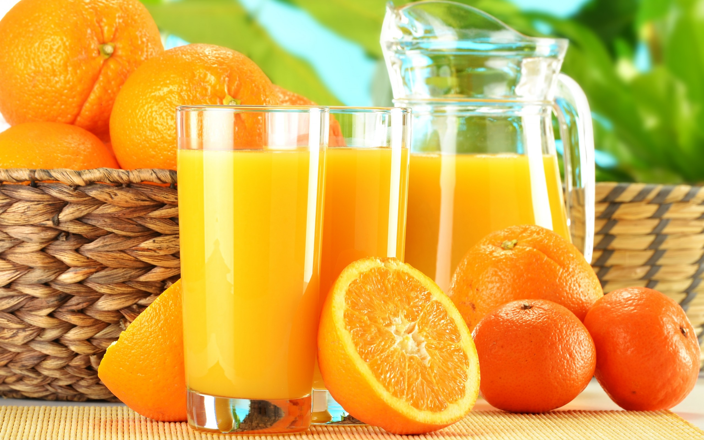
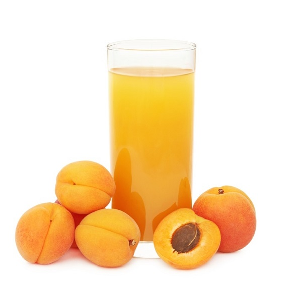
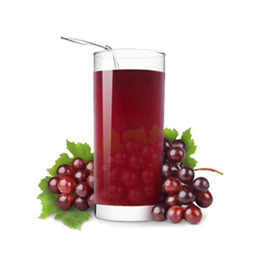
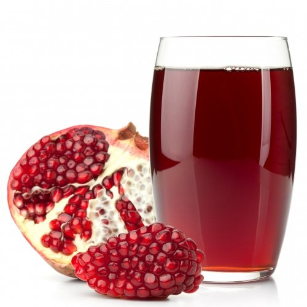
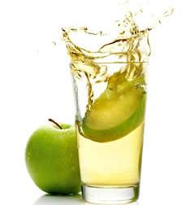

Сок — это жидкий пищевой продукт, полученный в результате отжима съедобных спелых плодов овощных или фруктовых культур.
Сок популярен практически во всех странах мира. Наиболее распространены соки, выжатые из съедобных плодов доброкачественных, спелых фруктов и овощей.
Однако существуют соки, полученные из стеблей, корней, листьев различных употребляемых в пищу трав (например, сок из стеблей сельдерея, сок из стеблей сахарного тростника).
Соки из винограда и вишни считаются соками с почти одинаковым составом.
С точки зрения потребителей, соки традиционно делят на три вида:
С точки зрения потребителей, соки традиционно делят на три вида:
-
Свежевыжатый (свежеотжатый) сок.
Сок, который производят в присутствии потребителей с помощью ручной или механической обработки плодов или других частей растений; -
Сок прямого отжима.
Это сок, изготовленный из доброкачественных спелых фруктов и овощей, прошедший пастеризацию и разлитый в асептические пакеты или стеклянную тару. -
Восстановленный сок.
Это сок, произведенный из концентрированного сока и питьевой воды, который поступает в продажу в асептической упаковке.

Абрикосовый сок
Продукт (напиток), получаемый выдавливанием жидкости из свежих абрикосов. Содержит провитамин А (каротин), необходимый для нормального роста и развития организма
Апельсиновый сок
Популярный напиток для завтрака, получаемый выдавливанием жидкости из свежих апельсинов. Богат витаминами (особенно аскорбиновой кислотой), обладает антицинготными свойствами

Виноградный сок
Популярный напиток, получаемый выдавливанием жидкости из свежих ягод винограда. Сохраняет целебные свойства винограда, содержит большое количество сахара, витаминов и минеральных солей, рекомендуется как ценный диетический продукт.

Гранатовый сок
Популярный напиток, получаемый выдавливанием жидкости из свежих плодов гранатового дерева (гранатин). Плоды граната богаты сахарами, таннинами, витамином С, содержат клетчатку, минеральные вещества и микроэлементы: кальций, магний, калий, марганец, натрий.

Яблочный сок
Популярный напиток, получаемый выдавливанием жидкости из свежих яблок. Богат сахаром, пектином и минеральными солями. Полезен при заболеваниях желудочно-кишечного тракта и дизентерии, способствует нормализации артериального давления.